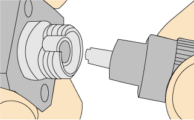
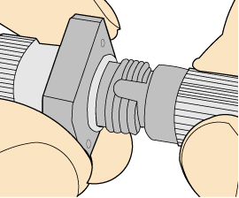
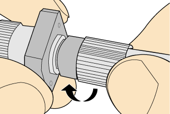
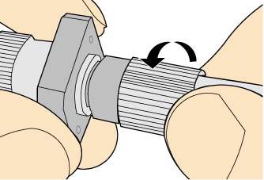

Installing an FC Fiber Connector
Procedure
- Remove the dustproof cap of the FC connector and store it for future use.
- Align the core pin of the male connector with that of the female connector, as shown in Figure Aligning the male connector with the female connector.
Figure 1 Aligning the male connector with the female connector
- Align the male connector with the female connector and gently push the male connector until it is completely seated in the female connector, as shown in Figure Feeding the male connector into the female connector.
Figure 2 Feeding the male connector into the female connector
- Fasten the locking nut clockwise and ensure that the connector is securely installed, as shown in Figure Fastening the locking nut.
Figure 3 Fastening the locking nut
- To disassemble an FC fiber connector, loosen the locking nut counterclockwise, and gently pull the male connector, as shown in Figure Disassembling an FC fiber connector.
Figure 4 Disassembling an FC fiber connector